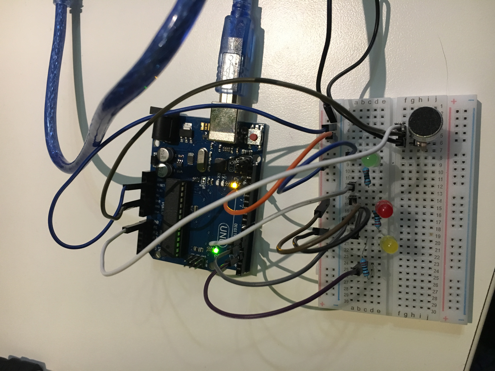
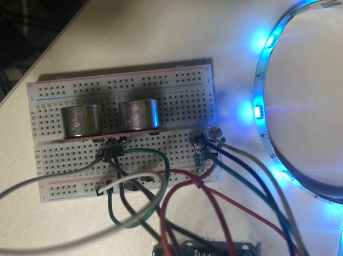

Proces
De labweken bestaan uit twee weken waarin er in een groep gewerkt wordt aan het maken van een product binnen de gegeven onderwerp. Ik had de opdracht Artificial Creature. Hieronder kan er alles gelezen worden over het procesverloop en het product.
Dag 1
Op de eerste dag is er als eerst onderzoek gedaan naar wat artificial creatures precies inhoudt en werden er voorbeelden opgezocht waaruit inspiratie gehaald kan worden. Ook is er gebrainstormd en gekeken welke richtingen we op kunnen gaan. Vooral in de technische kant. De groep was verdeeld in twee waarbij er een deel ging kijken naar de technische mogelijkheden en de andere ging ideeën bedenken voor de creature. Er was uiteindelijk besloten om voor een pratend creature te gaan.

Dag 2
Op de tweede dag gingen we nog wat brainstormen, zodat er een aantal mogelijkheden zouden zijn, voor het geval de eerste niet werkte. Er was toen ook besloten dat het een beter idee zou zijn om eerst te gaan kijken naar wat er allemaal gedaan kan worden met het technische gedeelte. Op deze manier kunnen we vanuit daar een concept bedenken waarvan het zeker is dat het ook echt gemaakt kan worden en dat het ook zou werken.


Dag 3
Vandaag is er verder gewerkt aan de raspberry pi en werd er meer gekeken naar de mogelijkheden die er zijn voor de beweging en de lampjes. Zo wilde we eerst dat de creature zou draaien naar geluid, maar dit bleek na wat onderzoek niet mogelijk te zijn. Dus werd het plan de creature pas te laten werken wanneer iemand in de buurt kwam. Hiervoor is er een ultrasonic sensor voor gekocht. Verder is er ook getest met een RGB lampje om alvast te kijken wat daar allemaal mee gedaan kan worden. Hierbij is het gelukt om het in allerlei kleuren op verschillende volgorde te laten oplichten.
Dag 4
Op de vierde dag heb ik gewerkt aan met de ultrasonisch sensor. Ik wilde ervoor zorgen dat wanneer iemand in de buurt komt van de Bot er een lampje oplicht. Hier had ik wel erg moeite mee. Ik probeerde als eerst de sensor apart te laten werken en dan de code en opstelling van de RGB lampje van gister eraan toe te voegen. Maar dit lukte niet. Ik ben daarna opzoek gegaan naar de code en opstelling waar ze allebei al met elkaar verbonden waren, maar ook dit lukte niet. Op het einde heb ik van iemand hulp gekregen die me een website liet zien waarbij er een led lampje verbonden was met de sensor. Dit ben ik vervolgens gaan gebruiken en in plaats van de led lampje heb ik de RGB lamp gebruikt en hier en daar wat aanpassingen gemaakt.
Dag 5
Vandaag ben ik doorgegaan met de licht mogelijkheden. We wilden namelijk in plaats van een RGB lampje, een led strip gebruiken. Gister was hier al door een groepslid een begin aan gemaakt, maar dit ging niet helemaal goed, doordat de strip maar niet van kleur wilde veranderen. Ik ben toen gaan kijken wat er precies aan de hand was, en zag dat de bedrading omgedraaid was. Nadat dit opgelost was gaf de strip wel verschillende kleuren aan. De volgende taak was vervolgens om de led strip 1 kleur te geven. Dit ging ook niet helemaal goed, doordat we na heel lang verschillende codes geprobeerd te hebben, erachter zijn gekomen dat niet alles op de goede plaats gezet was, zoals er was aangegeven. Na dit met behulp van de docent veranderd te hebben, kon er 1 kleur aan de strip toegewezen worden.
Dag 6
Nu alle technische onderdelen werken, werd er bedacht hoe de bot er van buitenaf uit zal zien. Na dit vastgesteld te hebben werden de taken verdeeld. Doordat we het materiaal nog niet hadden kon er nog niet begonnen worden aan het maken van de robot, dus werd er alvast gekeken wat er voor de expo gedaan kon worden. Er werden taken verdeeld en ik kreeg de taak om alvast te kijken hoe alles geplaatst kan worden. Dit duurde niet lang, doordat het alleen de robot zou zijn en meer niet. Wel vond ik dat het er erg saai uitzag dus heb ik nog een beetje nagedacht over wat erbij kan om he op te leukennhet. Verder heb ik geholpen bij de werking van de servomotor. De bedoeling is namelijk dat de servomotor gebruikt zal worden om het hoofd van de bot heen en weer te laten bewegen. Dit ging alleen niet zo goed. Samen met een andere groepslid was het gelukt om de servomotor heen en weer te laten bewegen en het om de zoveel tijd te laten stoppen. Alleen lukte het niet op het te koppelen aan het geluid. Zo moest, wanneer er gesproken werd tegen de bot, het hoofd recht naar voren kijken en wanneer er niet gepraat wordt, het hoofd heen en weer moest bewegen. Alleen was dit aan het einde van de dag nog steeds niet gelukt,dus werd dit verplaatst naar de volgende dag.
Dag 7
Vandaag werd er gewerkt aan de uiterlijk van de bot. Er waren nog een aantal materialen nodig ervoor dus ben ik naar de bouwmarkt geweest om die te kopen. Toen ik terug was ben ik alvast begonnen aan de led matrixen. Er zijn er namelijk twee besteld voor de mond en het hart. Tot het aan zou komen ben ik alvast gaan kijken hoe ze werken. Toen ze er waren ben ik gelijk aan de slag gegaan met het kijken naar hoe je een kloppend hart er op kan animeren. Dit was niet ingewikkeld en ging gelijk goed. Vervolgens ben ik opzoek gegaan naar hoe het mondje eruit zou komen te zien en ook dit ging goed. Het was de bedoeling dat de twee op 1 arduino geplaatst zouden worden en de code in een bestand gezet wordt, maar hier was geen tijd meer voor. Dus zal dit de volgende dag uitgevoerd worden.
Dag 8
Vandaag ben ik doorgegaan met de led matrix. Ik ben de twee matrixen op 1 arduino gaan plaatsen, wat niet ingewikkeld was, en ben vervolgens gaan kijken hoe ik allebei de code in 1 bestand kon samenvoegen. Dit was erg moeilijk. Omdat het dezelfde code was ben ik de code stukje voor stukje gaan dupliceren en heb elk stukje een ander naam gegeven. Maar dit werkte niet, want het negeerde de code die aangemaakt was voor de smile en liet het kloppend hart op allebei de matrixen zien. Ik ben daarom opzoek gegaan naar een andere code, maar deze code had geen kloppend effect zoals de eerste. Ik bedacht toen om te kijken of ik het stukje code van de kloppende animatie van het eerste kon gebruiken bij het tweede bestand, maar dit werkte maar niet en steeds als ik die veranderde, werkten alle andere codes niet meer. Dus ben ik de rest van de dag verschillende codes gaan zoeken en heb ik verschillende tutorials bekeken. Op het einde was het nog steeds niet gelukt dus besloot ik het te laten voor de volgende dag. Ik ben thuis nog even verder gaan zoeken naar een manier die hetzelfde effect zou kunnen creëren, maar ook dit was me niet gelukt.
Dag 9
Ik ben vandaag doorgegaan met waar ik gister gestopt was, namelijk met de code voor de twee led matrixen. Ik had code gevonden voor alleen het hartje, maar zonder de animatie. Daarom ben ik gaan kijken of er code is die de brightness van het licht kon aanpassen. Op deze manier zou er een for loop toegevoegd kunnen worden die hetzelfde effect kan creëren als de animatie ervoor. Maar ook dit werkte niet. Het was wel gelukt om de brightness van de matrix die verbonden was met de arduino te veranderen maar die verbonden is met de andere matrix bleef hetzelfde, wat ik ook veranderde. Dus ben ik teruggegaan naar de eerste code. Ik vond de animatie bij deze code het leukste passen, dus ben ik weer gaan proberen te kijken of ik ze samen kan toevoegen. Maar toen dit ook niet werkten ben ik hulp gaan vragen bij de docent. Ook zei begreep eerst niet helemaal waarom het niet werkten, maar na een tijdje was het gelukt en had 1 led matrix het mondje van de robot en het andere een kloppend hart.
Dag 10: Expo
Op de expo dag werden nog de laaste puntjes op de i gezet en werd de bot getest en klaargemaakt voor wanneer de mensen zouden komen. De ruimte om de bot heen werd opgeruimt en de posters met de suggesties die aan Goo Goo gevraagd zouden kunnen worden en de banner werden opgehangen. De bot werkte geduurdend de ochten precies zoals het hoort er kwamen veel mensen langs die Goo Goo een vraag wilde vragen, wat goed verliep. Maar rond vier uur wanneer de expo begon, deed Goo Goo het oppeens niet meer. Er werd steeds antwoord gegeven met dat er iets mis is of dat er een glitch was. Het was niet helemaal duidelijk wat er aan de hand was. Ook het opnieuwe opstarten werkten niet. Na een tijdje werd het duidelijk dat er de hele tijd een limiet was op de aantal vragen die gesteld konden worden, namelijk 500. Dit was dezelfde ochten met het testen natuurlijk behaald, waardoor het voor 24 uur geblokkeerd werd en er geen vragen meer gesteld konden worden. Dit kon dus ook niet meer gepresenteerd worden. Om toch aan de mensen te kunnnen laten zien hoe het werkt, hebben we allemaal filmpjes verzameld van de andere studenten, die ze ooit van Goo Goo gemaakt hadden en werden deze filmpjes aan de mensen getoond.
De foto's zijn genomen door Tamara de Vries, Tim Den Ouden, Madhwi Jitan, Diewertje Broersma en Shorok Moustafa.
Product
Tijdens de labweken heb ik gewerkt aan het onderwerp Artifical Creature. Hiervoor heb ik samen met mijn groepje gewerkt aan het maken van zo een creature die de naam Goo Goo heeft gekregen. Goo Goo is een robot die met je praat en antwoord geeft op verschillende vragen die je zou kunnen hebben. Het idee erachter is dat het als een soort huisgenoot gezien wordt, iemand waarmee je kan praten. Je kan het van alles vragen, iets over haarzelf, wie ze is wat ze kan en waar ze van houdt of over hele andere dingen, een bepaald recept, over het weer, sport, het laatste nieuws etc.
Om Goo Goo aan de praat te krijgen, moet je altijd beginnen met “hey Goo Goo”. Op dat moment zullen haar lichten die eerst wit waren, rood worden om aan te geven dat ze luistert. Dan stel je je vraag en wanneer je uitgepraat bent worden de lichten blauw om aan te geven dat ze antwoord geeft. Met behulp van de raspberry pi is google assist aan haar toegevoegd. Ze kan dus op alle vragen die je op google opzoekt antwoord geven en daarnaast kun je ook zelf een aantal erbij voegen. Je geeft dan aan welk antwoord ze moet geven bij welke vraag.
De gebruikers waren erg enthousiast over het product, er werd van alles aan haar gevraagd. Ze waren zelfs zo enthousiast dat Goo Goo voor de expo haar limiet had bereikt. Maar zelfs wanneer er alleen een voorbeeld filmpje getoond werd, waren mensen geïnteresseerd. Ze wilden weten hoe het werkten en dachten aan verschillende situaties waar ze het zelf voor zouden gebruiken als ze ook zo een creature hadden. Zo was er een gebruiker die zei dat ze wel zo één zou willen hebben voor haar keukentje om te kunnen helpen bij het koken van verschillende recepten.
Reflectie
Ik ben uiteindelijk erg blij met het resultaat, het was dan wel jammer dat op de dag dat Goo Goo het echt moest doen, zij het niet meer dit, maar zij heeft voor een paar uur wel precies gedaan wat ze hoorde te doen, dus vond ik het uiteindelijk niet eens heel erg. Er zijn binnen de twee weken wel een aantal aanpassingen gemaakt aan het concept. Zo was het de bedoeling dat Goo Goo haar hoofd zou draaien naar de richting van waar de gebruiker gesproken heeft en zou zij automatisch de gebruiker gedag zeggen als het binnen een bepaalde afstand zou komen. Alleen waren er hierbij een aantal andere aspecten die ervoor zouden zorgen dat dit niet zo goed zou werken. Zo zou bijvoorbeeld de hoeveelheid geluiden tijdens de expo de creature kunnen verwarren, dus werd er besloten om dit niet eraan toe te voegen. Verder is het wel gelukt om het volgens plan te houden, Goo Goo is een pratend artificial creature die reageert op de mensen. Doordat er op het einde nog tijd over was, zijn er nog een aantal kleine dingen aan Goo Goo toegepast. Dit zijn het kloppend hart en het geanimeerde mondje, die verandert wanneer Goo Goo spreekt.
Wat ik tijdens het proces goed vond gaan was dat ik alles goed kon volgen. Ik heb wel eens de neiging om op het moment dat ik iets niet snap, niet voor uitleg te vragen, maar gewoon aan de slag te gaan en te kijken waar ik precies kom. Maar hier was dit gelukkig niet het geval. Er waren inderdaad momenten geweest, aan het begin toen er nog onderzoek gedaan werd naar artificial creatures en de mogelijke toepassingen (spraak,beweging etc.), waar ik helemaal niets snapte van dingen die opgenoemd werden, bijvoorbeeld de rasberry pi. Maar toen er eenmaal besloten werd dat er hier gebruik van gemaakt zal worden, ben ik er zelf meer over gaan lezen en heb ik hulp gevraagd van mijn groepje. Naast dit was ik ook erg blij met hoe ik omging met problemen en wat ik opgeleverd. Zo heb ik samen met een mede lid gewerkt aan het geanimeerde hart en mond. Dit heeft heel erg veel tijd ingenomen omdat het maar niet wilde werken, maar ik bleef maar naar een oplossing zoeken en steeds opnieuw alles in elkaar zetten tot het eindelijk gelukt was. Het heeft drie dagen geduurd, maar uiteindelijk vond ik dat niet eens zo erg, doordat ik tijdens deze drie dagen veel verschillende dingen heb geleerd, door al dat opzoeken dat ik gedaan heb. Wat een grote pluspunt is.
Deze twee weken waren een hele leuke ervaring, het onderwerp en alles wat je hierbij leert. Ik heb het gevoel dat ik in deze twee weken veel meer geleerd heb over codes dan de twee jaar. Dit komt vooral omdat ik gedwongen was onderzoek te doen om een oplossing te vinden voor het probleem. Ook al was er af en toe wat frustratie en waren er momenten waar ik het zat was, de sfeer die daar was en alle andere studenten om je heen die net zo hard bezig waren en elkaar aan het helpen waren, hielpen hier enorm mee. Ik was ook heel blij dat er in mijn groepje tijdens het werken geen enkele discussie geweest is en dat iedereen even hard aan het werken was. Ieder persoon had zijn eigen taak en wanneer je klaar was ging je iemand anders helpen om zijn taak af te maken. Dit heeft uiteindelijk ervoor gezorgd dat alles op tijd af was en er op deze manier tijd was voor een laatste controle.